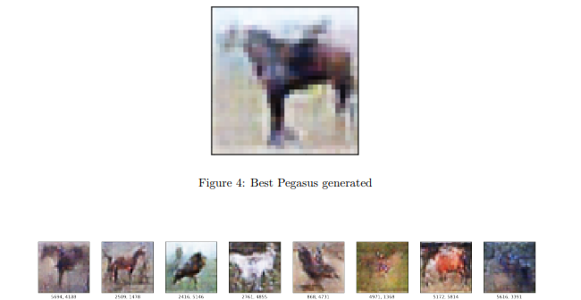

-
ReVox
Soundboard, Voice Changer
Control your voice with ReVox, an open-source, free all-in-one package containing a soundboard, sampler/recorder and voice changer. Enhance your social gaming experience or livestreams!
Originally my introduction to C++, it's now a software I plan on supporting for some time to come.- C++
- Qt
- Digital Signal Processing
- Audio
- Windows
May '22 -

-
Portfolio Website
The second iteration of my personal website. Now with a dedicated page for ReVox!
- HTML
- JavaScript
- CSS
- Bootstrap
Jan '23

-
Learning Tetris
4th Year Masters' Study
A study on the different learning algorithms used to play games. Tested on an emulation of NES Tetris.
Achieved above-human-average performance, but unfortunately it wasn't able to max-out.- Python
- Pytorch
- Genetic Algorithm
- Deep Learning
- Games
Oct '20 - May '21

-
Style Transfer - Game2Movie
4th Year Project
In an attempt to make a classic video game (Mafia) look more realistic, a Contrastive Unpaired Translation model is trained on various mafia-based movie clips.
- Python
- Pytorch
- Computer Vision
- Style Transfer
- Deep Learning
Jan '21 - May '21

-
RGB Camera Pose Tracking
3rd Year Bachelors' Project
An implementation of a Human-Computer Interface, using a cheap RGB camera to predict hand pose and track position.
Used to give the final presentation.- Python
- Pytorch
- Computer Vision
- Deep Learning
- Image Processing
- HCI
Oct '19 - Apr '20

-
Pegasus Generator
3rd Year Project
A Variational Auto-Encoder/Generative Adversarial Network that learns to generate images of pegasi, using images of horses and birds.
- Python
- Pytorch
- Deep Learning
- Image Processing
- VAE/GAN
Oct 19 - Jan '20
 -
Object Detection in Vehicles
3rd Year Project
Semi-Global Block Matching and Sparse Stereo Vision are applied to a dataset of stereo images taken from a car in motion, with the goal to detect objects using YOLOv3 and identify their proximity.
- Python
- Pytorch
- Deep Learning
- Computer Vision
- Image Processing
Oct 19 - Dec '19

-
OpenGL Whitechurch, Durham
2nd Year Coursework
A 3D rendering of Whitechurch, Durham, complete with an animated moving car and interactive elements, made with OpenGL.
- HTML
- JavaScript
- OpenGL
- Blender
Jan '19 - Apr '19

-
Ultimate Tic-Tac-Toe
2nd Year Coursework
A dynamic webapp, letting users challenge each other in games of Ultimate Tic-Tac-Toe. Complete with a chatroom, friends list and P2P matchmaking.
- HTML
- CSS
- JavaScript
- Node.js
- AJAX
- Bootstrap
- Networking
Oct '18 - Jan '19